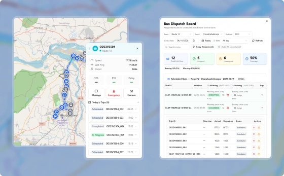
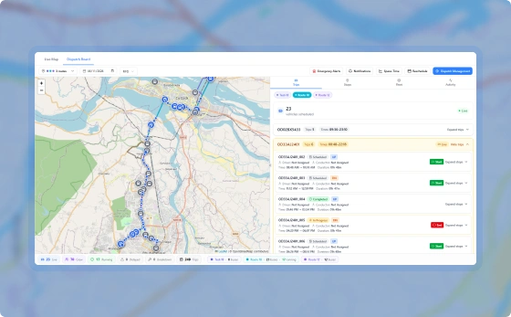
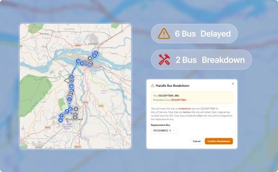

Allocate vehicles, monitor departures, and respond to disruptions from a real-time dispatch console.

Assign buses to planned service slots from a central command view.

Assign multiple slots at once while tracking overall coverage.

Respond instantly when a vehicle fails or a trip is cancelled.
See how PUBBS Transit brings planning, scheduling, dispatch, fleet management, and passenger services together in one connected platform.
Book a Demo